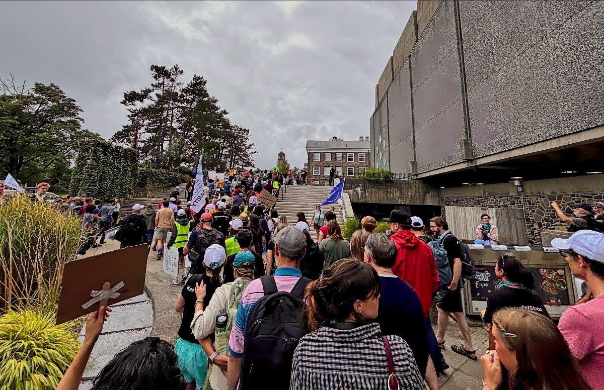
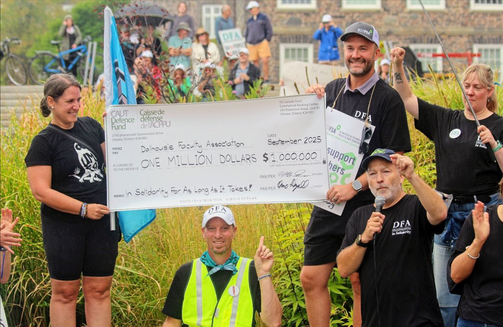
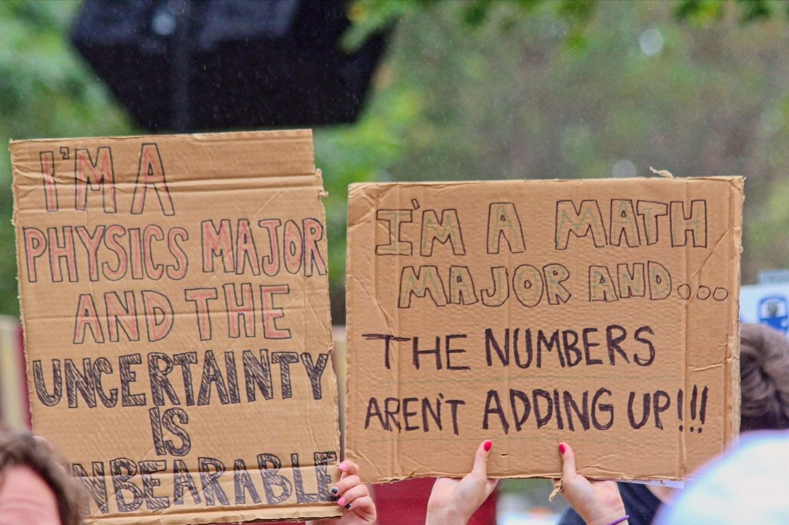
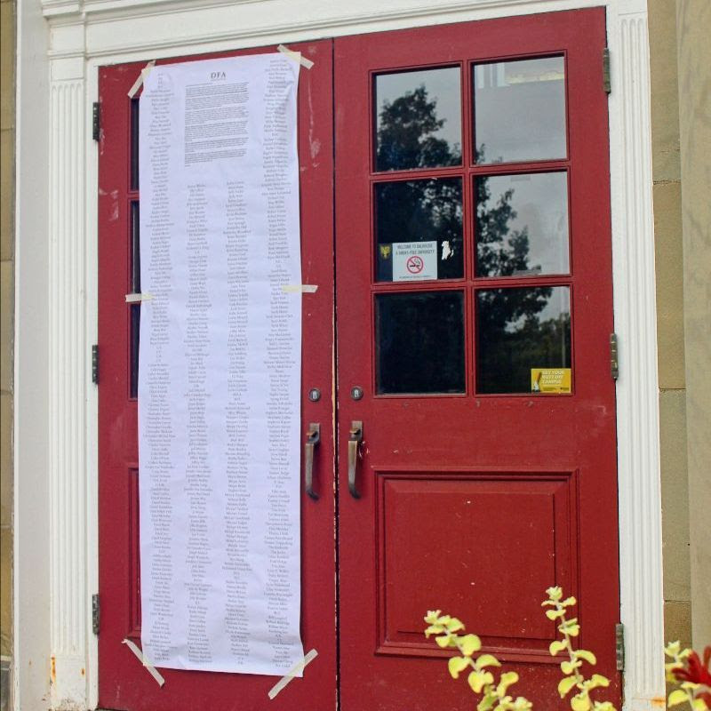
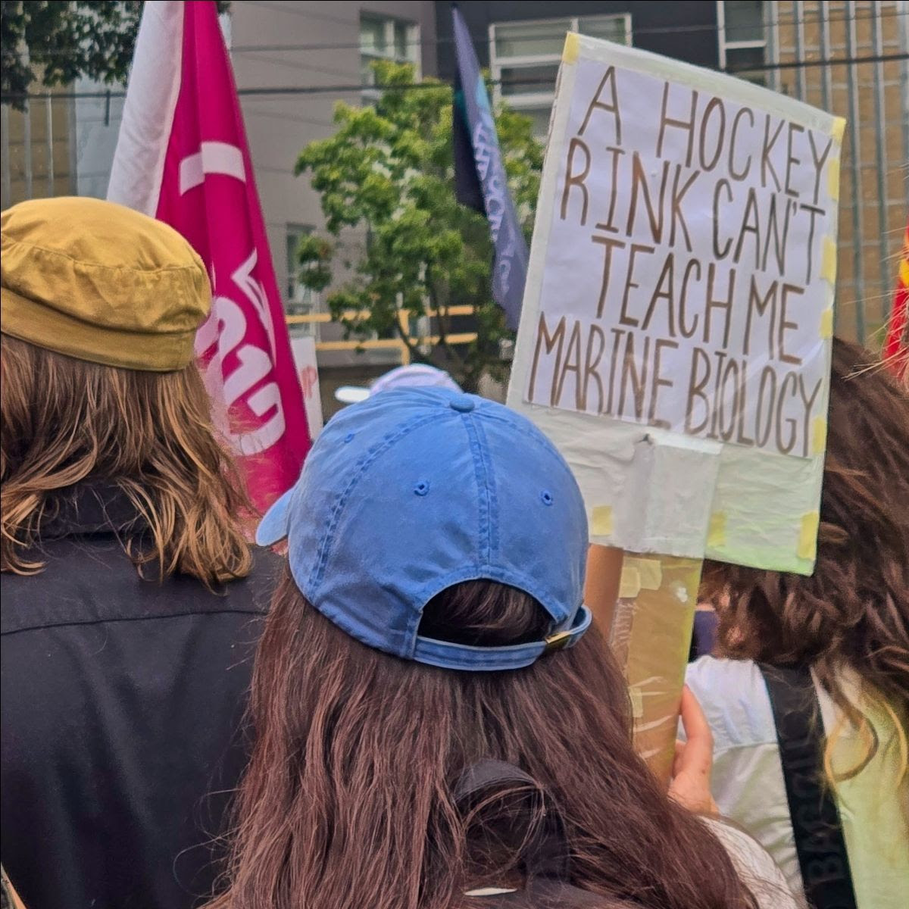
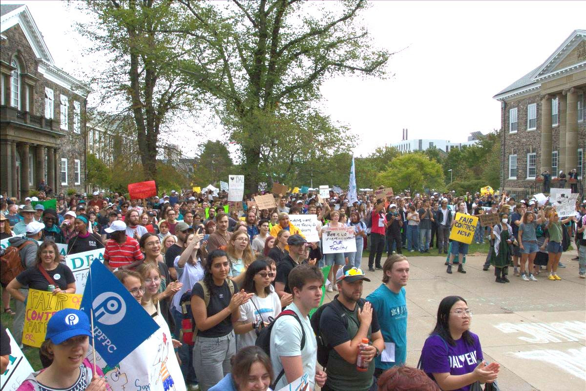

Daily Bulletin, September 8

It was the worst of weeks, it was the best of weeks
Last week was a pivotal one in our struggle to achieve a fair and full deal. Let’s just run down a few things that happened:
Monday, Sept. 1: Labour Day. DFA President Dave Westwood gives a rousing speech at the Halifax-Dartmouth Labour Council BBQ, connecting our fight to the larger labour movement.
Tuesday, Sept. 2: The Dalhousie Student Union council votes to stand in solidarity with the DFA, putting the weight of 20,000 DSU members behind us! This opinion piece in The Gazette offers some reasons why.
Wednesday, Sept 3: We learn that the provincial Conciliation officer has set a date for both parties to return to the table (that meeting is scheduled for today, Monday, Sept. 8).
Thursday, Sept. 4: The administration once again tries to undermine the bargaining process, as Dave explains in unambiguous terms.
Friday, Sept. 5: We hold our largest rally yet, with students coming out in droves to support us. More details on this tremendous event, below.
But enough of looking backward! As the latest update from our bargaining team reminds us, now is the time to look forward. The energy of Friday’s rally was invigorating for us all, and this week begins with renewed hope that the conciliation process will bring about positive results.
But for that to happen, we need to maintain Friday’s energy on the lines. We’ve won the first round: getting the Board back to the table. Now we need to maintain our resolve to win the second round: a fair and full deal!
We trust everyone appreciates that updates on conciliation will be shared when and as they can, and that we can’t predict how long it will take. We are committed to following the proper procedure as laid out by the Conciliation officer in order to ensure a positive resolution. But please rest assured that as soon as we can say anything, we will.
Friday’s Rally in Support of Precarious Workers
To say Friday’s Rally was a success would be to trade in understatement. Congratulations to Talia Evans and the entire organization team for this one!! As the photos below show, there was a massive turnout of members, allies, and CAUT flying pickets from across the country. And, yes, we acknowledged the massive support we have received from CAUT in the form of a large (in every sense!) cheque for a million dollars.
But the most moving element of the day was seeing the vast numbers of students out to support us, many with their own handmade signs. Hearing the students start a spontaneous chant of “DFA! DFA!” outside of Hicks is a memory we will hold forever.
Let’s not forget the purpose of this rally, though, as detailed in the released media advisory:
Approximately 15% of DFA’s members are contract faculty without permanent employment. The DFA is committed to standing together to fight precarious employment for its membership, particularly for early career scholars and those employed via Limited Term Appointments (LTAs). The DFA is pushing for creative solutions to increase the salaries of early career scholars, and a pathway to job security via contract conversion to stable employment for long-term LTA faculty.
To say Friday’s Rally was a success would be to trade in understatement. Congratulations to Talia Evans and the entire organization team for this one!! As the photos below show, there was a massive turnout of members, allies, and CAUT flying pickets from across the country. And, yes, we acknowledged the massive support we have received from CAUT in the form of a large (in every sense!) cheque for a million dollars.
But the most moving element of the day was seeing the vast numbers of students out to support us, many with their own handmade signs. Hearing the students start a spontaneous chant of “DFA! DFA!” outside of Hicks is a memory we will hold forever.
Let’s not forget the purpose of this rally, though, as detailed in the released media advisory:
Approximately 15% of DFA’s members are contract faculty without permanent employment. The DFA is committed to standing together to fight precarious employment for its membership, particularly for early career scholars and those employed via Limited Term Appointments (LTAs). The DFA is pushing for creative solutions to increase the salaries of early career scholars, and a pathway to job security via contract conversion to stable employment for long-term LTA faculty.



Teach-in Tuesday

Several colleagues are planning a teach-in event Tuesday, from 12:00 - 1:00 p.m. in the quad, with distinguished speakers from across our faculties offering mini-lectures on topics of their choice, including the very topics they would be teaching were we not locked out.
This one came together quickly in consultation with our DSU colleagues; we’re in the final stages of planning, but will let you and our students know tomorrow morning!

Shout-outs
Our editor wants to send a loud shout out to everyone who has submitted photos for the Bulletin over the past several weeks! We only wish we could include them all, but keep them coming (see the next shout out)!
Big shout-out to virtual picketers Rongrong He, who has been keeping track of all the media coverage of the DFA’s fight, and Libby Myles and Haorui Wu, who have been building and organizing a repository of all the photos sent to picket.photos.dfa@gmail.com. Thank you for your work on the virtual picket lines!